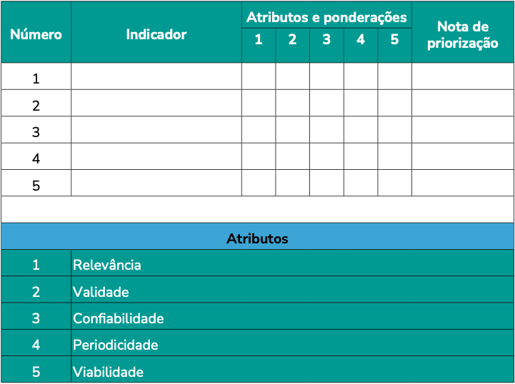
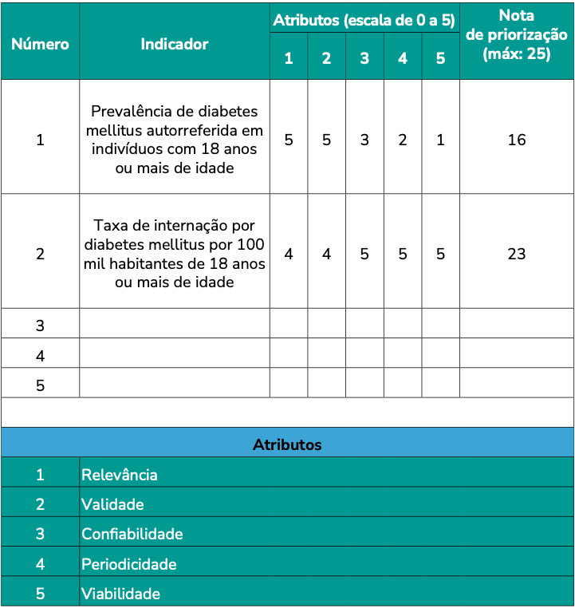

Módulo 1 | Aula 2
Atributos desejáveis e seleção de indicadores
Critérios de seleção de indicadores
Na prática, nem sempre o indicador possível de ser calculado reúne todos os atributos desejáveis, especialmente em função das fontes de dados disponíveis e da periodicidade desejada.
Tanto na pesquisa acadêmica quanto na gestão, algumas ferramentas podem ser úteis para padronizar a seleção e priorização de indicadores. No quadro a seguir, temos um exemplo.
Partindo-se dos objetivos de um programa, de uma política, ou de um estudo avaliativo, por exemplo, deve-se selecionar indicadores factíveis, e então validá-los preliminarmente com as partes interessadas. Nessa etapa, podem ser convidados membros da equipe e pessoas especialistas no tema para avaliar a aderência de cada indicador aos atributos desejáveis. Podem também ser atribuídos pesos diferentes a cada um dos atributos, a depender dos objetivos de uso do indicador.
Quadro 1: Matriz de seleção de indicadores segundo atributos e ponderações.

Fonte: Elaboração própria, a partir de Brasil, 2018.
Imagine que a gestão de um município de 100 mil habitantes precise selecionar indicadores de monitoramento para a implementação de um novo programa de dispensação de medicamentos para pessoas com diabetes. A equipe se reúne e entre os indicadores listados previamente estão os dois abaixo:
- Indicador 1: Prevalência de diabetes mellitus autorreferida em indivíduos com 18 anos ou mais de idade. Fonte: Pesquisa Nacional de Saúde (PNS).
- Indicador 2: Taxa de internação por diabetes mellitus por 100 mil habitantes de 18 anos ou mais de idade. Fonte: Sistema de Informações Hospitalares (SIH-SUS).
Agora vejamos quanto aos critérios de avaliação:
No atributo relevância, o indicador foi pontuado como altamente relevante, uma vez que para a distribuição de medicamentos é necessário estimar a prevalência de pessoas com diabetes. Assim, atribuímos o peso 5.
Quanto à validade, o indicador é adequado, pois quantifica a proporção da população que vive com diabetes, ou seja, a medida corresponde diretamente ao conceito que se pretende avaliar. Dessa forma, também atribuímos o peso 5.
Em relação à confiabilidade, consideramos peso 4, já que a base utilizada para o cálculo é o inquérito domiciliar da PNS, uma pesquisa de abrangência nacional conduzida pelo IBGE. Contudo, entre as limitações do indicador está ser uma informação autorreferida, sujeita a um viés de memória.
Quanto à periodicidade, os dados da PNS são coletados a cada seis anos, o que pode representar um intervalo longo para o monitoramento, por exemplo, da efetividade de programas ou políticas. Por esse motivo, atribuímos o peso 2 a esse atributo.
Por fim, a viabilidade de cálculo do indicador é baixa tratando-se de um município que não seja capital, como no nosso exemplo, embora os dados para outras abrangências sejam públicos e amplamente disponibilizados para uso. A pontuação, portanto, irá diferir de acordo com o objetivo de uso do indicador.
O indicador é relevante para realizar um diagnóstico direcionado à dispensação de medicamentos para diabetes. Assim, atribuímos o peso 5.
Quanto à validade, o indicador recebeu nota 4, pois quantifica apenas as internações realizadas no Sistema Único de Saúde, não quantificando toda a população que poderá ser potencialmente abrangida pelo programa em questão.
Em relação à confiabilidade, consideramos peso 5, já que a fonte de dados utilizada para o cálculo é o Sistema de Informações Hospitalares do SUS, base de dados oficial de registro de todas as internações.
Quanto à periodicidade e à viabilidade de cálculo, foi dada a nota máxima, pois o SIH é atualizado mensalmente e os dados são públicos.
Quadro 2: Matriz de seleção de indicadores segundo atributos e ponderações (escala de 0 a 5; nota máxima: 25).

Fonte: Elaboração própria, a partir de Brasil, 2018.
O primeiro indicador é altamente relevante para o planejamento, por ser uma medida aproximada da prevalência de pessoas com diabetes, público-alvo do programa. Contudo, esse não é um indicador desagregável para todos os municípios brasileiros, pois tem como fonte a PNS, realizada a cada seis anos, o que restringe seu uso para o monitoramento contínuo de programas.
O indicador 2 é um indicador usualmente utilizado como medida de efetividade da Atenção Primária à Saúde, pois a diabetes é uma condição sensível à APS. O SIH-SUS tem uma atualização e disponibilização de dados mensal, com dados desagregáveis por municípios e até mesmo unidades de atenção hospitalar, o que é positivo para a elaboração de indicadores que exigem um monitoramento contínuo em tempo oportuno.
A partir desse exemplo, compreendemos que a seleção de um indicador irá depender dos objetivos e do contexto de uso.
No capítulo “Produção de dados desagregados para ‘não deixar ninguém para trás’”, Barbara Cobo e Leonardo Athias apresentam a desagregação de dados como uma ferramenta essencial para combater a invisibilidade estatística e garantir que as políticas públicas alcancem, de fato, todos os territórios e pessoas.
Leia o texto e reflita sobre a importância do atributo desagregabilidade para a construção de indicadores de monitoramento e avaliação dos programas e políticas sociais.
Por fim, é importante reconhecermos as limitações do indicador construído, e revisitar os atributos com o tempo para tentar aperfeiçoá-lo na medida em que as fontes de dados também são atualizadas e aprimoradas. Portanto, o não atendimento a um dos atributos não deve significar a exclusão do indicador, e é possível reparar fragilidades identificadas com o uso de indicadores complementares.
Pense cada indicador como parte de um kit de ferramentas. Cada uma tem uma função e uso específico, e podem ser complementares.
Fonte: Freepik
No próximo módulo, abordaremos o processo de construção dos indicadores.